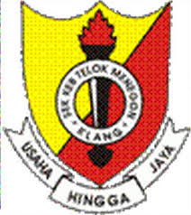

My Educational Background

Primary School
SK Telok Menegon, Klang, Selangor
UPSR: 2A 2B 1D
Achievements: Representing the school in football competitions
Curriculum: School Teenage Cadets and Football
Secondary School
SMK Kampung Jawa, Klang, Selangor
SPM: 5A 2B 1C
SPM excellence appreciation award 2021
Curriculum: School Teenage Cadets, National Principles Club, and Football

University
University Technology Mara, Machang Campus, Kelantan
Dean's Award in Semester 2
Curriculum: Kesatria for semester 1 and Counseling for semester 2 and 3